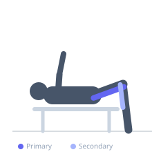
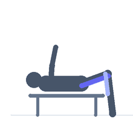

Exercise guide / Lying Leg Curl
Lying Leg Curl
The lying leg curl is an isolation exercise for the hamstrings performed on a machine. It trains knee flexion in a prone position, isolating the hamstrings without meaningful hip involvement. It is one of the few exercises that directly isolates the hamstrings and is commonly used as a finishing movement in leg training.
Primary muscles
biceps femoris long head
biceps femoris short head
semitendinosus
semimembranosus
Secondary muscles
gastrocnemius medial
Equipment
Lying Leg Curl Machine
Optional
Seated Leg Curl Machine


Starting position
- Lie face down on the machine with the ankle pad resting on the lower legs just above the heels. Hips flat on the pad, hands gripping the handles.
Setup
- Adjust the ankle pad so it sits comfortably above the Achilles tendon. Align the knee joint with the pivot point of the machine.
Steps
- Curl the lower legs upward toward the glutes by flexing the knees.
- Raise until the lower legs are as vertical as possible.
- Lower under control back to full knee extension.
Coaching cues
- Squeeze your hamstrings hard at the top of each rep
- Resist the weight on the way down — the eccentric is as important as the concentric
Breathing
- Exhale on the curl, inhale on the descent.
Range of motion
- Full extension at the bottom, maximum comfortable knee flexion at the top.
Tempo
- 2-1-3-0
Common mistakes
- Lifting the hips off the pad to generate momentum
- Stopping short of full range at both the top and bottom
Safety
- Ensure the pivot point is aligned with your knee to avoid joint stress
Training
- hypertrophy: 10–15 reps
- endurance: 15–20 reps
- hypertrophy: 3–4 sets
- endurance: 2–3 sets
- Rest: {'hypertrophy': 75, 'endurance': 45}